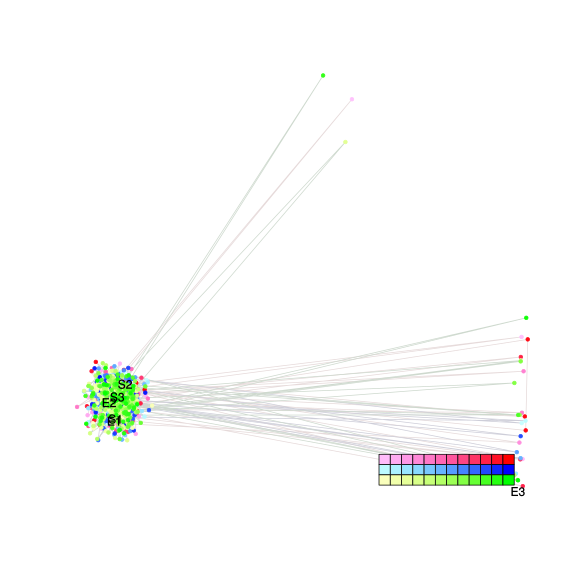
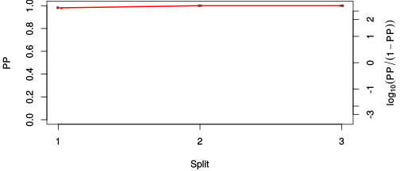
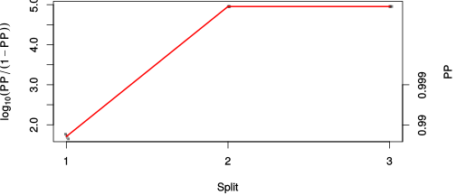

| chain # | burnin | subsample | Iterations (remaining) | command line | subdirectory | directory |
|---|---|---|---|---|---|---|
| 1 | 10000 | 1 | 90000 | bali-phy E1_AA_red3_v2_PerissoArtio.fas -s 45963 -n PerissoArtio_c1 | PerissoArtio_c1-1 | /DATA/work/ONCOGENEVOL/database/trees/Bali-Phy/E1 |
| 2 | 10000 | 1 | 90000 | bali-phy E1_AA_red3_v2_PerissoArtio.fas -s 52893 -n PerissoArtio_c2 | PerissoArtio_c2-1 | /DATA/work/ONCOGENEVOL/database/trees/Bali-Phy/E1 |
| 3 | 10000 | 1 | 90000 | bali-phy E1_AA_red3_v2_PerissoArtio.fas -s 36941 -n PerissoArtio_c3 | PerissoArtio_c3-1 | /DATA/work/ONCOGENEVOL/database/trees/Bali-Phy/E1 |
| P(data|M) = -7181.331 +- 0.552 | Complete sample: 3 topologies | 95% Bayesian credible interval: 1 topologies |

Phylogeny Distribution

| Partition support: Summary |
| Partition support graph: SVG |
| 50% consensus | Newick (+PP) | SVG | |||||
| 66% consensus | Newick (+PP) | SVG | |||||
| 80% consensus | Newick (+PP) | SVG | |||||
| 90% consensus | Newick (+PP) | SVG | |||||
| 95% consensus | Newick (+PP) | SVG | |||||
| 99% consensus | Newick (+PP) | SVG | |||||
| 100% consensus | Newick (+PP) | SVG | |||||
| MAP | Newick (+PP) | SVG | |||||
| greedy | Newick (+PP) | SVG |
{kind=link}
{kind=link}
{kind=link}
{kind=link}
{kind=link}
{kind=link}
{kind=link}
{kind=link}
Alignment Distribution
Partition 1
| Diff | Min. %identity | # Sites | Constant | Informative | ||||
|---|---|---|---|---|---|---|---|---|
| Initial | FASTA | HTML | Diff | 5.38% | 630 | 1 (0.159%) | 99 (15.7%) | |
| Best (WPD) | FASTA | HTML | AU | 37% | 794 | 144 (18.1%) | 223 (28.1%) |


Mixing
| burnin (scalar) | ESS (scalar) | ESS (partition) | ASDSF | MSDSF | PSRF-CI80% | PSRF-RCF |
|---|---|---|---|---|---|---|
| 757 | 1846 | 8278.639 | 0.001 | 0.003 | 1.001 | 1.008 |
Projection of RF distances for the first 3 chains3D | Variation of split PPs across chains |
Scalar variables
| Statistic | Median | 95% BCI | ACT | ESS | burnin | PSRF-CI80% | PSRF-RCF |
|---|---|---|---|---|---|---|---|
| prior | -455.1 | (-508, -405.3) | 79.86 | 3380 | 405 | 0.9995 | 1.003 |
| prior_A1 | -435.7 | (-487.8, -387.6) | 51.82 | 5210 | 222 | 0.9998 | 1.003 |
| likelihood | -7145 | (-7179, -7110) | 80.08 | 3371 | 346 | 1 | 1.007 |
| logp | -7600 | (-7638, -7566) | 55.34 | 4878 | 561 | 0.9998 | 0.9958 |
| Heat.beta | 1 | ||||||
| Scale1 | 2.13 | (0.8149, 4.387) | 1.019 | 264900 | 111 | 0.9999 | 0.9988 |
| S1.F.pi.A | 0.07864 | (0.06701, 0.09088) | 8.072 | 33448 | 113 | 0.9999 | 1.002 |
| S1.F.pi.R | 0.051 | (0.04147, 0.06137) | 7.963 | 33907 | 402 | 1 | 1.003 |
| S1.F.pi.N | 0.04144 | (0.0334, 0.04995) | 8.214 | 32871 | 399 | 1 | 1.002 |
| S1.F.pi.D | 0.0578 | (0.04735, 0.06894) | 8.255 | 32709 | 331 | 1 | 0.9981 |
| S1.F.pi.C | 0.03928 | (0.02967, 0.05023) | 8.119 | 33254 | 152 | 0.9999 | 0.9977 |
| S1.F.pi.Q | 0.04316 | (0.03494, 0.05193) | 8.219 | 32852 | 509 | 1 | 0.9946 |
| S1.F.pi.E | 0.05157 | (0.0424, 0.06139) | 8.078 | 33425 | 565 | 1 | 0.9956 |
| S1.F.pi.G | 0.07559 | (0.06169, 0.08974) | 12.2 | 22126 | 688 | 0.9993 | 0.9996 |
| S1.F.pi.H | 0.02673 | (0.02001, 0.03404) | 8.08 | 33417 | 514 | 1.001 | 1.005 |
| S1.F.pi.I | 0.03787 | (0.0297, 0.04668) | 8.056 | 33513 | 521 | 0.9998 | 0.9994 |
| S1.F.pi.L | 0.09213 | (0.07802, 0.1066) | 8.266 | 32663 | 233 | 0.9999 | 0.9985 |
| S1.F.pi.K | 0.04314 | (0.03461, 0.05224) | 7.86 | 34351 | 475 | 1 | 0.9937 |
| S1.F.pi.M | 0.02317 | (0.01732, 0.0298) | 7.884 | 34244 | 494 | 1 | 1.002 |
| S1.F.pi.F | 0.04547 | (0.03547, 0.05618) | 8.581 | 31464 | 411 | 0.9998 | 0.9992 |
| S1.F.pi.P | 0.04761 | (0.03725, 0.05859) | 8.53 | 31651 | 283 | 1 | 1.001 |
| S1.F.pi.S | 0.08353 | (0.07177, 0.09569) | 8.107 | 33305 | 600 | 1 | 0.9973 |
| S1.F.pi.T | 0.05497 | (0.04516, 0.06509) | 8.003 | 33738 | 480 | 1 | 0.9959 |
| S1.F.pi.W | 0.01667 | (0.01025, 0.02363) | 8.226 | 32822 | 328 | 0.9998 | 1.001 |
| S1.F.pi.Y | 0.02534 | (0.0183, 0.03291) | 8.141 | 33167 | 479 | 1 | 0.9965 |
| S1.F.pi.V | 0.06167 | (0.05093, 0.07281) | 8.107 | 33305 | 374 | 0.9995 | 1.001 |
| I1.RS07.meanIndelLengthMinus1 | 4.031 | (2.429, 6.329) | 65.46 | 4124 | 472 | 1 | 1.004 |
| I1.RS07.logLambda | -4.009 | (-4.325, -3.706) | 10.14 | 26615 | 86 | 1 | 1.001 |
| |A1| | 750 | (721, 793) | 146.3 | 1845 | 757 | 0.9931 | 1.008 |
| #indels1 | 50 | (43, 56) | 60.53 | 4460 | 244 | 0.8889 | 1.005 |
| |indels1| | 245 | (188, 326) | 87.44 | 3087 | 471 | 0.9891 | 1.001 |
| #substs1 | 1094 | (1061, 1117) | 121 | 2231 | 523 | 0.9545 | 1.004 |
| Scale1*|T| | 2.3 | (2.148, 2.46) | 9.078 | 29743 | 47 | 0.9998 | 0.9987 |
| |A| | 750 | (721, 793) | 146.3 | 1845 | 757 | 0.9931 | 1.008 |
| #indels | 50 | (43, 56) | 60.53 | 4460 | 244 | 0.8889 | 1.005 |
| |indels| | 245 | (188, 326) | 87.44 | 3087 | 471 | 0.9891 | 1.001 |
| #substs | 1094 | (1061, 1117) | 121 | 2231 | 523 | 0.9545 | 1.004 |
| |T| | 1.081 | (0.3857, 2.074) | 1.003 | 269185 | 111 | 1 | 0.9985 |